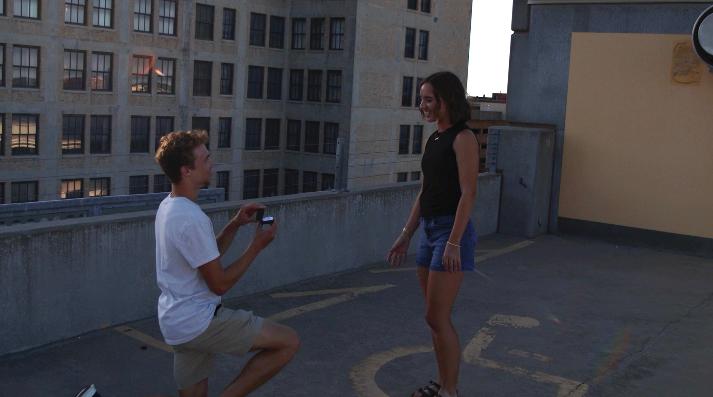

Levi and Abbye met in the summer of 2021, while working at Chick-fil-A Maple and Ridge. Abbye often worked the lunch and afternoon shift, while Levi worked the evening and closing shift. They crossed paths when their shifts overlapped and quickly found they had a lot in common. They shared values and initially connected through their love for running.
Levi told Abbye he liked her, and to his luck, she liked him back! Their first date was a 4 mile run; a date only runners would understand! Abbye lived in Cheney, so Levi drove out to meet her. He was nervous the whole 30-minute drive! The date was a success. They continued to get to know each other for about a month before they made it official on August 10, 2021!
Levi and Abbye continuted to grow in their relationship. They especially enjoyed going to their school dances together. Two different schools meant double the dances! Levi graduated high school and began his college education at Fort Hays State University. Being long-distance was tough, but they talked on FaceTime, and Levi often made trips back to see Abbye. When it came time for Abbye to choose a college, Levi did't push it on her, but deep down he hoped that Abbye would follow him. When Abbye announced she had committed to Fort Hays, it was much to Levi's excitement!
Eventually, they began to have conversations about getting married. Levi bought the ring, and it came early, when Abbye wasn't expecting it. On July 28, 2025, with the help of his friend Tyson, Levi took her to the rooftop of the Ambassador Hotel in downtown Wichita to do a "photoshoot date." However, this was the proposal in the disquise! Levi and Abbye are so excited to start their life together, and are honored for you to share the day with them.
